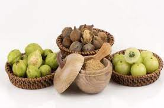

General Health
For Eyes:

- Take some triphala (an herbal mixture of three dried fruits) and soak it in water overnight.
Use that water to wash your eyes in the morning to keep them cool and soothed.
- Make a mixture of almonds, crystal sugar and fennel (i.e. saunf) and crush it into a powder.
Eat a spoonful every night before bed with milk to keep your eyes healthy.
For Stomachache:
-
- Take fenugreek seeds and cumin seeds in equal proportions, and roast them seperately.
- Crush them up finely and mix them with crushed coriander.
- Eat a spoonful during meals for adults, and half a spoon for children.
For Headache:
-
- Take a 2 inch piece of ginger and cut it into fine pieces.

- Mix it with a little bit of milk and make a paste.
- Put the paste on your head for 15-20 minutes in case of a light headache, or 1 hour in case of
a severe headache.
-
- Take leaves off a Marwa/Majoram plant, with fennel, ginger, cloves, black pepper, bay leaves and cinnamon.
- Boil them in water so as to make a tea, and drink it regularly to keep headaches away.